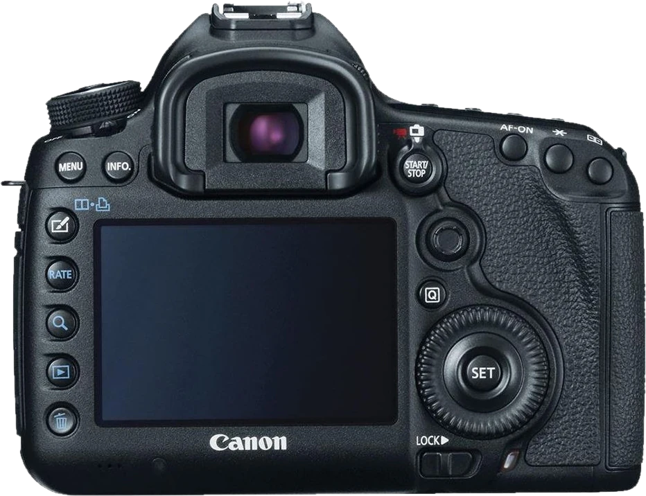

Magic Lantern modules · Canon 5D Mark III
5.7K anamorphic RAW on the 5D Mark III. WYSIWYG.
Crop Mor3 is Crop Mood for the 5D Mark III, by Özcan Çelik: a port of Bilal Fakhouri's crop_rec for the EOS M. 13 presets, three families: 1:1 crop up to 3.5K, 1x3 up to 5.7K, 3x3 up to 60p. What you see on the LCD is what you record.
- 5D Mark III firmware 1.1.3 & 1.2.3
- EOS-M 2.0.2 (
mlv_playonly) - Modules only · no firmware changes
Sensor mode simulator
A virtual 5D3 with the real ML menu. Press the buttons like on the camera, or use the Settings tab. The scene is a full 5760×3840 5D3 photo.
Keys: M ML menu · Enter SET · Q · arrows (menu, or pan 1:1) · R record · I info

On the camera
What you're recording
Lossless sizes are estimates.
All modes
Sensor 5760×3840. 1:1 crop runs in x5, 3x3 in Canon 720p 50/60. 1x3 height follows Canon FPS.
| Family | Preset | Raw frame | Final image | H FOV | V FOV | LiveView |
|---|---|---|---|---|---|---|
| 1:1 crop | 1280p (3:2) | 1920 × 1280 | 1920 × 1280 | 33% | 33% | WYSIWYG (x5, pan) |
| 1:1 crop | 1080p (16:9) | 1920 × 1080 | 1920 × 1080 | 33% | 28% | WYSIWYG (x5, pan) |
| 1:1 crop | 816p (2.35:1) | 1920 × 816 | 1920 × 816 | 33% | 21% | WYSIWYG (x5, pan) |
| 1:1 crop | 2.3K (16:9) | 2336 × 1312 | 2336 × 1312 | 41% | 34% | Centered 1920 px (x5) |
| 1:1 crop | 3.1K (2.35:1) | 3104 × 1320 | 3104 × 1320 | 54% | 34% | Centered 1920 px (x5) |
| 1:1 crop | 3.5K (2.71:1) | 3584 × 1320 | 3584 × 1320 | 62% | 34% | Centered 1920 px (x5) |
| 1x3 | 3.4K (16:9) | 1136 × 1920 24p 1024 × 1728 25p 912 × 1536 30p | 3408 × 1920 3072 × 1728 2736 × 1536 | 59% 53% 48% | 50% 45% 40% | WYSIWYG |
| 1x3 | 4.5K (2.35:1) | 1504 × 1920 24p 1360 × 1728 25p 1200 × 1536 30p | 4512 × 1920 4080 × 1728 3600 × 1536 | 78% 71% 63% | 50% 45% 40% | WYSIWYG |
| 1x3 | 5.4K (2040p) | 1808 × 2040 24p only | 5424 × 2040 | 94% | 53% | WYSIWYG |
| 1x3 | 5.7K (3:1 Max) | 1920 × 1920 24p 1920 × 1728 25p 1920 × 1536 30p | 5760 × 1920 5760 × 1728 5760 × 1536 | 100% | 50% 45% 40% | WYSIWYG |
| 3x3 | 50/60p (HFR) | 1920 × 800 60p 1920 × 960 50p | 1920 × 800 1920 × 960 | 100% | 63% 75% | WYSIWYG (720p mode) |
| 3x3 | 45/48p Tall | 1920 × 1040 48p 1920 × 1080 45p | 1920 × 1040 1920 × 1080 | 100% | 81% 84% | WYSIWYG (720p mode) |
| 3x3 | 2.40:1 Scope | 1920 × 800 50/60p | 1920 × 800 | 100% | 63% | WYSIWYG (720p mode) |
1:1 crop, turn on Magic Lantern's Movie → FPS override and set it to 23.976. The 1x3 modes follow Canon's selected frame rate on their own, and 3x3 modes run when Canon's video mode is set to 720p 50/60fps.
mlv_play: review on the camera
A rewritten MLV player for the 5D3, and a drop-in for Crop-Mood EOS-M. Gallery, real-time proxies with sound, LUTs, every bit depth.
Browse
- 3×2 gallery with mode badges (
5.7K,1080p…) and an SD/CF tag. - Thumbnails saved as
.THM: instant on the next visit. - INFO: clip details. Size, date, raw → desqueezed size, bit depth, LJ92, black level, fps, frames, length, MB/s, ISO, shutter, WB, lens, audio.
- Safe delete: always starts on Cancel. No ERASE key? INFO → SET.
- Hides macOS
._files. Plays old.RAWclips too.
Play
.PRXproxy: built on the first play (PRX+), then real time at the clip's fps.- Sound from the MLV, in sync, during proxy playback. Mute, 1–5, +6 dB, +12 dB.
- Pause, previous / next clip, back to the gallery, progress bar.
- 4-step zoom, pan with the arrows (zoom reads the raw).
exact: real-time pacing.all: every frame.- EOS-M: still runs when DryOS is out of task slots. Touch is ignored.
Look
- Superpixel renderer (default): 10, 12 and 14-bit, uncompressed and LJ92.
- 1x3 clips desqueezed automatically (RAWC).
- Bayer phase detected: no magenta on 1x3.
- Right colours: BT.709 on the 5D3, BT.601 on EOS-M.
- LUTs: Orig, Rec709, Kodak, Warm, Teal, B&W, plus your own
.cubefiles inML/LUTS/(up to 24).
Controls
| Key | Gallery | Playback |
|---|---|---|
| SET | Play clip | Show the playback bar |
| Arrows / wheel | Select clip | Wheel ◀ ▶: previous / next clip |
| PLAY | Exit | Pause / play |
| INFO | Clip details | Info text on / off |
| TRASH | Delete (starts on Cancel) | Delete |
| RATE | – | Next LUT |
| ZOOM | – | Zoom, arrows to pan |
| Q | – | Show / hide the playback bar |
| MENU | Exit | Back to the gallery |
Playback bar: Grid · ◀◀ · pause · ▶▶ · quality (color / fast / super) · LUT · volume · exact / all · Delete · Quit. Quality, LUT, volume and exact / all are remembered.
vs. stock mlv_play
| Stock | Crop Mor3 | |
|---|---|---|
| Bayer phase | Fixed | Detected per clip |
| Real time from SD | No | Yes, with .PRX |
| Sound | No | Yes (proxy playback) |
| Browsing | Next / previous | Gallery, thumbnails, clip details |
| Looks | – | 6 LUTs + your .cube |
| Delete | Press again within 5 s | Confirm screen, starts on Cancel |
Known limitations
- Pink or broken LiveView: sometimes, when returning to LiveView, the picture is pink or broken. Press MENU to open Canon's menu, then press MENU again to close it; LiveView comes back clean.
- Tested on SD only: all modes were tested on an SD card with an overclocked bus (
sd_uhs). CF cards and long takes are not tested yet. How long you can record depends on your card. - 2.3K–3.5K 1:1 crop need a fast card. 5.4K (2040p) is 24p only.
- 1:1 crop frame rate: these modes run in Canon's x5 LiveView at 29.776 fps. Set Movie → FPS override to 23.976 for 24p.
- 3x3 High-FPS modes only work with Canon's movie mode set to 720p 50/60fps.
- Panning the 1:1 window works in 1280p, 1080p and 816p. 2.3K–3.5K record a wider window but LiveView shows the center 1920 px.
- Panning and recording: while panning the 1:1 window with the joystick, LiveView can sometimes turn pink or broken. Don't start recording in that state: recording stops with a
Compression error(anASSERTlog on the card). Press MENU twice (open and close Canon's menu) to get a clean picture, then record. - Tall height: 1x3 modes read at most 1920 lines (2040 in 5.4K). Taller readouts were unstable (black level drops), so they are not offered.
- Firmware: 5D Mark III 1.1.3 and 1.2.3 only. EOS-M gets
mlv_playonly. - mlv_play: real-time playback needs a
.PRXproxy, built on the first play (that first play is slower). Sound plays only from the proxy. A proxy takes 170–345 KB per frame depending on the aspect ratio (≈ 250–500 MB per minute at 24p). Delete.PRXfiles to free space; they are rebuilt when needed.
Install
Your card must already boot Magic Lantern. The zip is just autoexec.bin + ML/: no ML-SETUP.FIR, no ROM, NVRAM or bootflag writes.
5D Mark III 1.1.3 or 1.2.3
- Make sure your CF/SD card already boots Magic Lantern on your firmware.
- Download the zip that matches your firmware:
…-5D3.113.zipor…-5D3.123.zip. - Extract
autoexec.binand theML/folder to the root of the card. The needed modules are already enabled throughML/SETTINGS/*.EN. - Boot the camera, open the ML menu → Modules, and check that
crop_rec(Crop Mor3),mlv_lite,mlv_playandsilentare loaded. - Press ERASE (trash) to open the ML menu. In the Movie tab, go to Crop Mor3, choose a mode with SET (
1:1 crop/1x3/3x3), and press Q for Preset.
EOS-M 2.0.2 · mlv_play only
- Download
…-EOSM.202-mlv_play.zip. - Copy
ML/MODULES/mlv_play.moto your existing Crop-Mood card, replacing the old file. - Make sure
mlv_playandsilentare enabled in ML menu → Modules.
cp -X or delete the ._* files afterwards. Otherwise DryOS can see them as ghost modules or clips. The release zips are already packaged without them.
Download
On GitHub Releases. Check the SHA-256 below.
| File | For | SHA-256 |
|---|---|---|
| crop_mor3-v0.3.1-5D3.113.zip | 5D Mark III 1.1.3 | 6fe1cddbcf86cdf758b623455701729b2d52e3412309403ed61e9a8f9aa09252 |
| crop_mor3-v0.3.1-5D3.123.zip | 5D Mark III 1.2.3 | e91b8d1674963d78eed57867f7e978a02bafbac90040f1d9c206b0fc9f0ab05b |
| crop_mor3-v0.3.1-EOSM.202-mlv_play.zip | EOS-M 2.0.2 | 7b9450ff525f73f74db4bc2e88c6148002de69bc0fcc4a9b088c963dfba20d29 |
What's new in v0.3.1
- mlv_play colours: the superpixel renderer uses BT.709 on the 5D3, like the stock colour preview (EOS-M keeps BT.601). 11-bit tone table: smoother shadows.
- mlv_play speed: info text is only repainted when it changes, and frames are no longer read back from LCD memory (superpixel and
.PRXplayback). - Module descriptions in the ML Modules menu updated (mlv_lite, mlv_play, Crop Mor3).
- Removed a leftover debug log (
ML/LOGS/CMLIVE.LOG).